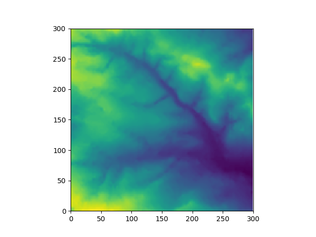
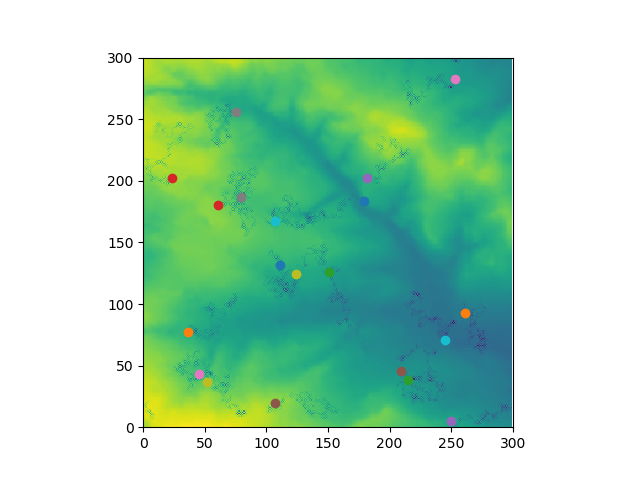

This code has been written for the second assessment of the Programming for Social Scientists module. The scope of the assessment was left relatively open-ended, allowing students to design their own program. The main requirement was that the code produced should:
This project has been undertaken as part of the 1-week intensive module taken at the end of September 2017. The aim was to build a simple agent-based model that characterised the basic interactions of agents with each other, and with their environment. These behaviours included moving, eating and sharing with neighbours. More information can be found in the Github repository (see title link).

